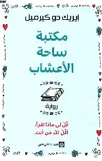
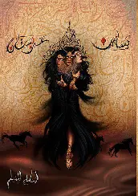
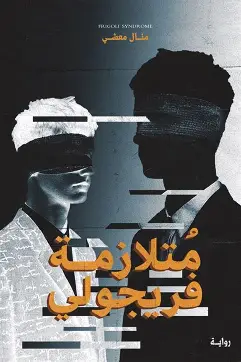
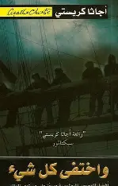
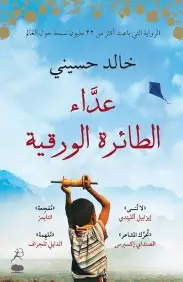
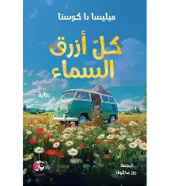

Refal
s202201874.uoh.edu.sa

تبدأ الحكاية بانتقال ناتالي وعائلتها إلى قرية ريفية هادئة حيث تفتتح مكتبة مقابل ساحة أعشاب , يأخذنا الكتاب من خلال هذه المكتبة إلى مواقف وقصص عاشها زوارها.
قُلْ لي ماذا تقرأ، أقُلْ لكَ مَن أنت..

بعد فرعون موسى و خاتم سليمان وقبل عيسى و سيد الأنام قبل الإسلام وقبل تاريخه و قبل النور و الصراط المستقيم قصة لم يدونها التاريخ لكنها نقلت بالأثر من قاص لآخر .. سأدونها بين ورق بالكاد سيحتويها .. واتركها لاختبار الزمن ..

نادر هو أخصائي نفسي يضطر بسبب ظروف الحياة الصعبة إلى تولي حالة مراهق يعاني من متلازمة فريجولي وهي واحدة من أندر وأغرب الاضطرابات النفسية. يبدأ نادر عمله الجديد منتحلاً هوية طبيب نفسي آخر، مما يزيد من تعقيد موقفه في اليوم الأول من عمله، يواجه نادر تحديات كبيرة عندما يكتشف أن لا أحد من المحيطين بالفتى يرغب في مساعدته أو شفائه، سواء كان ذلك من قبل المستشفى أو عائلته أو حتى من نادر نفسه. تتوالى الأحداث في إطار من التوتر النفسي والإحباط، مما يدفع نادر إلى التفكير في دوره كأخصائي نفسي والضغوط التي يواجهها في سبيل تقديم العون للشاب في محنته. تتناول القصة قضايا معقدة تتعلق بالصحة النفسية والاهتمام الحقيقي بالمرضى، مما يجعلها تجربة مؤثرة تثير التساؤلات حول المسؤولية والأخلاق في مجال الرعاية النفسية.

رواية بوليسية غامضة لأجاثا كريستي تتناول سلسلة من الجرائم الغامضة على جزيرة نائية، حيث يُقتل الضيوف واحدًا تلو الآخر وفقًا لأغنية الأطفال

تروى القصة من خلال شخصية أمير، الذي تنشأ بينه وبين حسن صداقة في كابول، رغم الفوارق الطبقية بينهما؛ فأمير هو ابن رجل أعمال ثري، وحسن ابن خادمهم من قبيلة الهزارة. يقضيان أيامهما في مطاردة الطائرات الورقية، وتبدأ الأحداث من أواخر الحكم الملكي في أفغانستان وحتى صعود حركة طالبان..

تحكي رحلة إيميل، شاب مصاب بمرض الزهايمر المبكر، في بحثه عن معنى الحياة والحب والحرية وسط مواجهة الفناء والمرض.